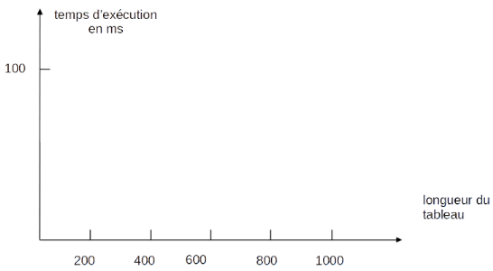

II. Les algorithmes de tri¶
TD : Trier un jeu de cartes¶
Introduction¶
La plupart des jeux de cartes nécessitent de trier les cartes que chaque joueur a en main pour mieux préparer son prochain coup. On considère que l'ordre croissant des cartes est le suivant :
2 - 3 - 4 - 5 - 6 - 7 - 8 - 9 - 10 - V - D - R - As
On distribue les cartes et vous avez dans votre main les cartes suivantes : 7 - D - 4 - As - R - 5
Quelle méthode peut-on apppliquer pour les trier par ordre de valeur croissante ? La formuler sous la forme d'une suite d'instructions pouvant se répéter jusqu'à obtenir un jeu trié.
A. Le tri par sélection¶
-
Aller sur https://www.cahier-nsi.fr/tri_par_selection/ et observer le principe du tri par sélection.
Commencer par bien lire la légende, indiquant à quoi correspondent les cartes identifiées par les flèches de couleur. -
On peut décrire son principe de la manière suivante :
- On sélectionne la carte de valeur la plus faible de l'ensemble de la main et on l'échange avec la première.
- On sélectionne la carte de valeur la plus faible de l'ensemble de la main sauf la première, et on l'échange avec la deuxième.
- Ainsi de suite, en passant à la troisième, quatrième, etc, jusqu'à ce que l'ensemble de la main soit trié.
- Appliquer cet algorithme à la main tirée en introduction :
Tableau Carte à comparer Carte à échanger 7 - D - 4 - As - R - 5 7, indice 0 4, indice 2 4 - D - 7 - As - R - 5 - Pour chaque étape, souligner la partie du tableau déjà triée.
B. Le tri par insertion¶
-
Aller sur https://www.cahier-nsi.fr/tri_par_insertion/ et observer le principe du tri par insertion.
Commencer par bien lire la légende, indiquant à quoi correspondent les cartes identifiées par les flèches de couleur. -
On peut décrire son principe de la manière suivante :
- On prend la deuxième carte :
si elle est de valeur inférieure à la première, alors on décale la première sur la droite, et on met la deuxième à sa place, sinon on ne fait rien. - On prend la troisième carte :
on la compare avec les précédentes : tant qu'elle sont plus grandes, on les décale sur la droite. Lorsque l'on trouve une carte plus petite ou bien que l'on arrive au bout du paquet, on s'arrête et on place la troisième carte à cet endroit. - Ainsi de suite jusqu'à ce que l'ensemble soit trié.
Appliquer cet algorithme à la main tirée en introduction :
Tableau Carte à comparer Carte(s) à décaler sur la droite Carte à insérer 7 - D - 4 - As - R - 5 D Aucune x 7 - D - 4 - As - R - 5 4 D, 7 4, indice 0 - Pour chaque étape, souligner la partie du tableau déjà triée.
- On prend la deuxième carte :
Cours¶
Comment trier un ensemble de données est un problème souvent rencontré en informatique : trier les meilleurs candidats à un concours, trier les patients d'un hôpital par numéro de sécurité sociale, trier une liste d'élèves par ordre alphabétique...
Il existe beaucoup d'algorithmes de tris résolvant ce problème. On s'intéresse ici au tri par sélection et au tri par insertion. On trie des tableaux dans l'ordre croissant (mais ce pourrait être l'ordre décroissant).
A. Le tri par sélection¶
A.I. Principe¶
Le tri par sélection consiste à sélectionner le minimum d'une partie du tableau de plus en plus petite à chaque étape, et à l'échanger avec un élément du tableau, en commençant par ceux les plus à gauche.
Principe
- Au début, on prend le premier élément. On recherche le minimum de l'ensemble du tableau, et on l'échange avec le premier (si ce n'est pas déjà le premier).
- Ensuite, on prend le deuxième élément. On recherche le minimum de l'ensemble du tableau moins le premier, et on l'échange avec le deuxième (si ce n'est pas déjà le deuxième).
- Ainsi de suite jusqu'à l'avant-dernier élément du tableau.
A.II. Pseudo-code¶
Des remarques suivantes, identifier les éléments de programmation qu'il faut utiliser.
L'indice de l'élément à échanger avec le minimum varie de 1 en 1. On sait d'avance combien d'étapes il va y avoir.
Il faut utiliser une boucle bornée, avec une variable i contenant l'indice de l'élément à échanger.
On fait une recherche de minimum à chaque étape sur une sous-partie du tableau.
Il faut utiliser une autre boucle bornée, commençant juste après l'indice de l'élément à échanger, et stocker l'indice du minimum trouvé dans une variable.
On formule le pseudo-code suivant :
fonction tri_selection(tab)
1 pour i allant du premier à l'avant-dernier indice de tab
2 indice_minimum <- i
3 pour j allant de i+1 au dernier indice de tab
4 si tab[j] < tab[indice_minimum]
5 indice_minimum <- j
6 si indice_minimum est différent de i
7 on échange tab[i] et tab[indice_minimum]
renvoyer tab
Entourer d'une couleur la partie qui permet de trouver, à chaque itération, le minimum du sous-tableau, et d'une autre couleur celle qui fait l'échange entre l'élément à échanger et le minimum.
Exemple
Appliquer l'algorithme pour trier le tableau [5, 8, 10, 1, 2].
Solution
Etape 0 : [5, 8, 10, 1, 2]
Etape 1 : [1, 8, 10, 5, 2]
Etape 2 : [1, 2, 10, 5, 8]
Etape 3 : [1, 2, 5, 10, 8]
Etape 4 : [1, 2, 5, 8, 10]
A.III. Complexité¶
Pour donner un ordre de grandeur de la complexité, on compte généralement l'opération la plus effectuée. Ici, il s'agit de l'opération de comparaison de la ligne 4.
Sur notre exemple
Etape 0 à 1 (i vaut 0)
Il y a 4 comparaisons (5-8, 5-10, 5-1, 1-2).
Etape 1 à 2 (i vaut 1)
Il y a 3 comparaisons (8-10, 8-5, 5-2).
Etape 2 à 3 (i vaut 2)
Il y a 2 comparaisons (10-5, 5-8).
Etape 3 à 4 (i vaut 3)
Il y a 1 comparaison (10-8).
En tout, il y a 1+2+3+4 comparaisons. En généralisant en fonction de \(n\) la taille du tableau, on a \(1+2+...+n-2+n-1\) comparaisons.
Une formule mathématique permet d'exprimer ce résultat plus simplement, retrouvons-la.
Notons \(S = 1+2+...+n-2+n-1\)
et notons \(S' = n-1+n-2+...+2+1\)
Que vaut \(S+S'\) ? \(n+n+...+n+n = n*(n-1)\)
Or \(S+S'=2S\), donc \(2S = n*(n-1)\) et \(S=n(n-1)/2\)
On peut donc dire que la complexité de ce tri est en \((1/2)n^2-(1/2)n\). On obtient l'ordre de grandeur en ne retenant que la plus grande puissance de \(n\).
Complexité
Le tri par sélection a donc une complexité en \(O(n^2)\), autrement dit quadratique.
Nous avions dit que nous allions estimer la complexité dans le pire des cas, mais avons pris un cas quelconque pour tab dans notre exemple. Pourquoi ?
Ici, on n'utilise que des boucles bornées. Il y a donc toujours autant de comparaisons, peu importe comment les valeurs sont placées dans le tableau.
B. Tri par insertion¶
B.I. Principe¶
Le tri par insertion consiste à insérer chaque élément à la bonne place dans une sous-partie du tableau déjà triée.
Principe
- Au début, l'élément à insérer est le deuxième. On le compare au premier et on fait passer le premier à droite et on insère le deuxième à la place du premier, s'ils ne sont pas dans le bon ordre.
- Ensuite, l'élément à insérer est le troisième. On le compare aux précédents, situés à sa gauche, tant que l'on ne trouve pas d'élément plus petit ou que l'on atteint pas le bord du tableau. Les éléments plus grands sont décalés sur la droite, et on insère le troisième à la bonne place dans le sous-tableau trié.
- Ainsi de suite jusqu'au dernier élément du tableau.
B.II. Pseudo-code¶
Des remarques suivantes, identifier les éléments de programmation qu'il faut utiliser.
L'indice de l'élément de référence varie de 1 en 1 à chaque étape. On sait d'avance combien d'étapes il va y avoir.
Il faut utiliser une boucle bornée, avec une variable i contenant l'indice de l'élément de référence.
On compare l'élément à insérer aux éléments à sa gauche, tant que l'on n'a pas trouvé d'élément plus petit ou que l'on n'est pas au bord du tableau.
On utilise une boucle non-bornée qui s'arrête quand une des deux conditions n'est plus remplie. A ce moment, on a l'indice de la bonne place pour l'élément de référence.
On formule le pseudo-code suivant :
fonction tri_insertion(tab)
1 pour i allant du deuxième au dernier indice de tab
2 val_i <- tab[i]
3 j <- i
4 tant que j > 0 et tab[j-1] > val_i
5 tab[j] <- tab[j-1]
6 j <- j-1
7 tab[j] <- val_i
renvoyer tab
Exemple
Appliquer l'algorithme pour trier le tableau [5, 8, 10, 1, 2].
Solution
Etape 0 : [5, 8, 10, 1, 2]
Etape 1 :[5, 8, 10, 1, 2]
Etape 2 : [5, 8, 10, 1, 2]
Etape 3 : [1, 5, 8, 10, 2]
Etape 4 : [1, 2, 5, 8, 10]
B.III. Complexité¶
Pour estimer la complexité de ce tri, on compte le nombre de décalages faits "sur la droite" (on ne compte pas le placement de la référence).
Ce nombre est-il le même, pour n'importe quel tableau que l'on trie ?
Non, mieux le tableau d'entrée est déjà trié, moins il y aura de décalages à faire.
Quel tableau correspond alors au pire des cas, celui qui nécessite le plus d'opérations ?
Le tableau trié dans l'ordre inverse (décroissant) correspond au pire des cas.
Prenons l'exemple du tri du tableau [5, 4, 3, 2, 1]
Etape 0 à 1 (i vaut 1) -> [4, 5, 3, 2, 1]
Il y a 1 décalage (5->4).
Etape 1 à 2 (i vaut 2) -> [3, 4, 5, 2, 1]
Il y a 2 décalages (5->3, 4->5).
Etape 2 à 3 (i vaut 3) -> [2, 3, 4, 5, 1]
Il y a 3 décalages (5->2, 4->5, 3->4).
Etape 3 à 4 (i vaut 4) -> [1, 2, 3, 4, 5]
Il y a 4 décalages (5->1, 4->5, 3->4, 2->3).
En tout, il y a \(1+2+3+4\) décalages. En généralisant en fonction de \(n\) la taille du tableau, on a \(1+2+...+n-2+n-1\) décalages, donc le même résultat que pour le tri par sélection.
Complexité
La complexité dans le pire des cas du tri par insertion est en \(O(n^2)\), soit quadratique.
Conclusion¶
Ces deux algorithmes de tri sont donc comparables dans le pire des cas. Le tri par insertion sera tout de même plus efficace pour des données déjà partiellement triées, alors que ce paramètre ne change rien au coût du tri par sélection.
Si on veut trier un très grand tableau, le nombre d'opérations augmentera beaucoup plus pour un algorithme de tri que pour un algorithme de recherche d'occurrence (de complexité linéaire). Si on multiple la taille d'un tableau par 2, le trier prendra 4 fois plus de temps.
TP : Algorithmes de tri¶
Echauffement¶
Pour nous aider pour la suite, nous allons commencer par ré-implémenter des algorithmes déjà vus.
-
Ecrire une fonction prenant en paramètre un tableau
tet renvoyant l'indice de son minimum :Code
def mini(t): ind = ... #à compléter return ind assert mini([7,1,-5,8,12]) == 2Optimiser le code
Pas besoin d'utiliser de variable stockant la valeur du maximum, on peut ne stocker que son indice, et comparer t[i] à... l'élément de t d'indice ind.
-
Ecrire une fonction prenant en paramètres deux variables
aetbet échangeant leurs valeurs (adoit contenir la valeur deb, etbla valeur dea) :Code
def echange_valeurs(a, b): # à compléter return a, b assert echange_valeurs(1, 100) == (100, 1)Optimiser le code
On peut aussi utiliser la double affectation : x, y = y, x prend la valeur de y et la met dans x, et prend la valeur de x et la met dans y.
Mais il faut savoir le faire avec une affectation simple.
A. Le tri sélection¶
Le tri sélection permet de trier un tableau de nombres ou ce caractères quelconque, en appliquant l'algorithme suivant :
Pour i allant du premier à l avant-dernier indice
on recherche l indice du minimum entre l indice i et la fin du tableau
si l indice du minimum et i sont differents
on échange le minimum trouvé avec l élément d indice i
Pour implémenter le tri par sélection, nous allons d'abord coder des sous-fonctions qui vont faire chacune une partie du travail, et qu'il faudra mettre ensemble.
-
Modifier la fonction
miniécrire en question 1 de l'échauffement, pour écrire une fonction renvoyant l'indice du minimum d'un tableautà partir d'un indicedebut:Code
def minimum(t: list, debut: int) -> int: ind = ... #à compléter return ind assert minimum([7,1,-5,8,12], 0) == 2 assert minimum([7,1,-5,8,12], 3) == 3Aide
Il ne faut pas parcourir tout le tableau, mais seulement à partir de debut. Faites attention aux paramètres du range, et à la valeur d'initialisation de ind.
-
Modifier la fonction
echange_valeursécrite en question 2 de l'échauffement pour obtenir une fonction échangeant les éléments situés aux indicesind1etind2d'un tableaut.Code
def echange(t: list, ind1: int, ind2: int) -> list: #à compléter return t assert echange([2,8,10,1], 0, 2) == [10,8,2,1] -
Compléter la fonction
selectioneffectuant le tri sélection, implémentant l'algorithme énoncé plus haut en utilisant les fonctionsminimumetechange.Rappel : Après avoir exécuté la définition de ces fonctions dans les cellules plus haut, vous pouvez utiliser les fonctions dans une autre cellule.
Code
def selection(t: list) -> list: for i in range(len(t)-1): #recherche du minimum à partir de i - appeler la fonction minimum et stocker le résultat dans une variable min_ind ... #échange, si besoin if i != min_ind: ... # appeler la fonction echange return t assert selection([2,8,7,1,9]) == [1,2,7,8,9]
B. Le tri par insertion¶
Le tri par insertion fonctionne selon l'algorithme suivant :
Pour i allant du 2ème au dernier indice du tableau
on décale sur la droite tous les éléments à gauche de celui d indice i qui lui sont supérieurs
on trouve l indice où placer l élément d indice i, soit en arrivant au bout du tableau, soit à l indice juste avant celui d un élément inférieur.
on place l élément d indice i
-
Implémenter la fonction
tri_insertionà partir du pseudo-code (plus détaillé que l'algorithme) ci-dessous :Pseudo-code
Pour i allant du 2ème au dernier indice du tableau t val_i <- t[i] j <- i tant que j est supérieur à 0 et val_i est inférieur à t[j-1] on met t[j-1] à la place de t[j] # décalage sur la droite on décrémente j si j est différent de i on met val_i à la place de t[j]Code
def tri_insertion(t: list) -> list: #à compléter return t assert tri_insertion([2,8,7,1,9]) == [1,2,7,8,9] -
Ecrire la même fonction sans le
return, et exécuter la cellule ci-dessous.Code
def tri_insertion(t: list): #à compléter tab = [2,8,7,1,9] tri_insertion(tab) assert tab == [1,2,7,8,9] -
Comment le test a-il été modifié ? Que s'est-il passé ?
Les modifications faites sur une liste Python donnée en paramètre d'une fonction sont sauvegardées dans la variable en paramètre. Le return n'est donc pas nécessaire. La sortie de la fonction a remplacé l'entrée, on parle de tri en place, la modification est faite "sur place", pas dans une autre variable.
Pour aller plus loin... (à faire si vous avez le temps)¶
-
Implémenter le tri sélection sans utiliser de sous-fonctions, mais en écrivant tout le code dans le corps de
tri_selection.Code
def tri_selection(t): #à compléter tab = [2,8,7,1,9] tri_selection(tab) assert tab == [1,2,7,8,9] -
Implémenter un autre algorithme de tri, le tri à bulles sur le site e-nsi/pratique : Tri à bulles
- Implémenter l'insertion dans un tableau trié, sur le même site : Insertion dans une liste triée
> Note : la fonctionappendest utilisée ici, on l'utilise avec la syntaxel.append(e)aveclune variable de typelisteteun élément à ajouter àl. C'est l'équivalent dul = l + [e].
TP : Coût en temps des tris par sélection et par insertion¶
Créer un nouveau fichier Python dans votre dossier NSI, dans un dossier seq7 et le nommer TP_Complexite_Tris.py.
A. Le pire des cas¶
Nous allons commencer par étudier la complexité des tris dans le pire des cas : lors que le tableau est trié dans l'ordre inverse, ici l'ordre décroissant. L'objectif est de comparer les deux algorithmes de tri.
A.I. Le tri par sélection¶
-
Utiliser une fonction implémentant le tri par sélection, placer sa définition en haut du programme.
-
Créer, dans la suite du fichier, un tableau
t1par compréhension, de la manière suivante :t1 = [200-i for i in range(200)]. -
Importer la fonction
timede la bibliothèquetimeen haut de votre programme pour pouvoir lancer un compteur, lorsqu'une ligne de votre programme s'exécute :from time import time -
Utiliser le code suivant pour obtenir le temps d'exécution de la fonction
tri_selectionlorsqu'elle prendt1en paramètre en millisecondes :debut = time() tri_selection(t1) tps = (time()-debut)*1000 -
Dessiner le graphique suivant sur votre cahier de TP, et lui donner le titre "Pire des cas". Y placer la valeur de
t1, pour une longueur de tableau de200: -
Refaire la même opération, c'est-à-dire le calcul du temps d'exécution, mais avec un tableau
t2de longueur400. Lui donner les mêmes valeurs que précédemment : pour chaque élément d'indicei, affecter400-i.Reporter la valeur de temps obtenue sur le graphique.
-
Réitérer ces opérations pour un tableau de longueur 600, 800, et 1000 (ils doivent être non-triés comme
t1ett2) et tracer la courbe qui relie les différents points sur le graphique. -
Quelle est la complexité en temps du tri par sélection dans le pire des cas ?
A.II. Le tri par insertion¶
Refaire exactement la même chose pour le tri par insertion et placer les points sur le même graphique que pour le tri par sélection, mais dans une autre couleur :
- implémenter l'algorithme (et garder la fonction dans votre script pour la suite),
- relever son temps d'exécution pour des tableaux non-triés d'une taille variant de 200 à 1000.
Vous devez avoir deux courbes sur votre graphique représentant les temps d'exécution des tris dans le pire des cas.
Quelle est la complexité en temps du tri par insertion dans le pire des cas ?
B. Le meilleur des cas¶
Faisons à présent les mêmes calculs, mais dans le meilleur des cas : lorsque le tableau est déjà trié. A priori, nos algorithmes n'ont rien à faire, mais l'ordinateur ne le sait pas.
B.I. Le tri par sélection¶
-
Créer un tableau
t1par compréhension, de la manière suivante :t1 = [i for i in range(200)]. Les valeurs det1seront alors rangées dans l'ordre. -
Appliquer le même script qu'à la question A.I.4. pour obtenir la nouvelle valeur de
tpset indiquer cette valeur sur un nouveau graphique dont le titre est "Meilleur des cas" : -
Réitérer les étapes pour avoir les valeurs correspondant à des tableaux de taille
400,600,800et1000, comme dans la partie précédente.
Légender la courbe obtenue pour indiquer qu'il s'agit des résultats pour le tri par sélection.
B.II. Le tri par insertion¶
Refaire la même chose pour le tri par insertion, et placer les points sur le graphique de la partie B.I.. Utiliser une autre couleur, et légender le graphique pour que l'on comprenne à quel algorithme de tri chaque courbe correspond.
Conclusion¶
Que peut-on dire sur la performance de ces deux algorithmes de tri ?